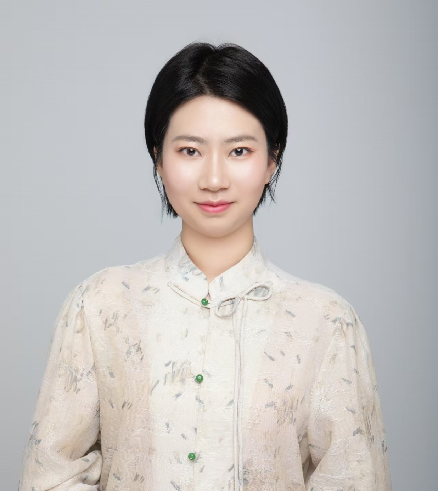
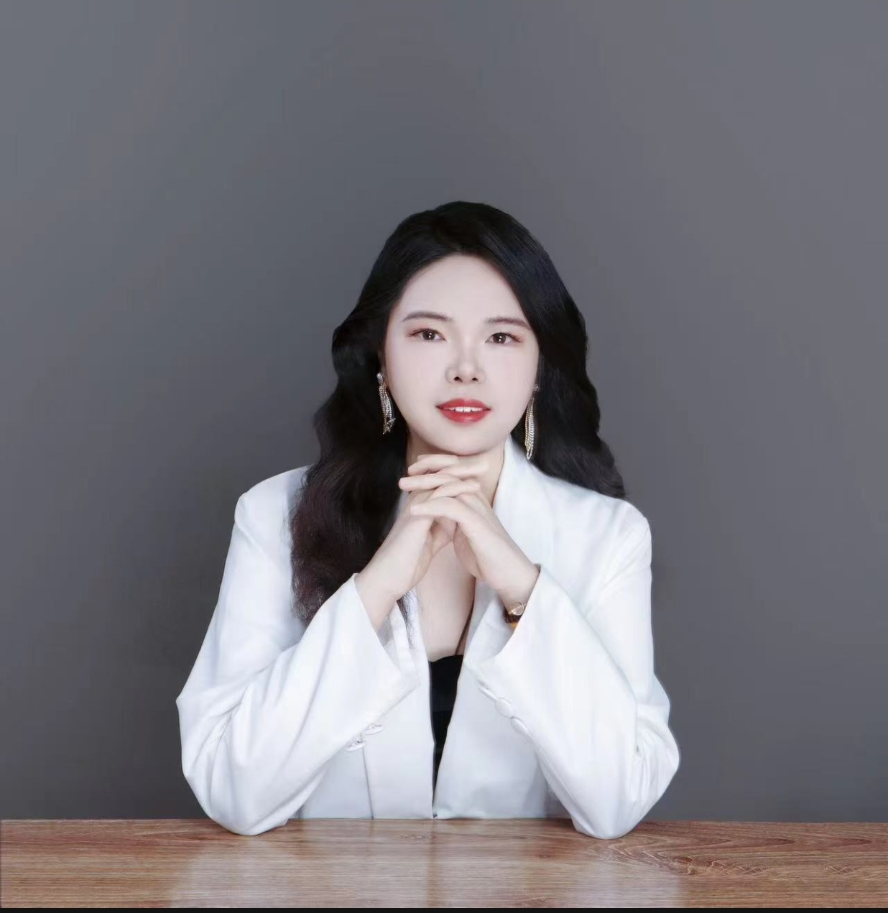
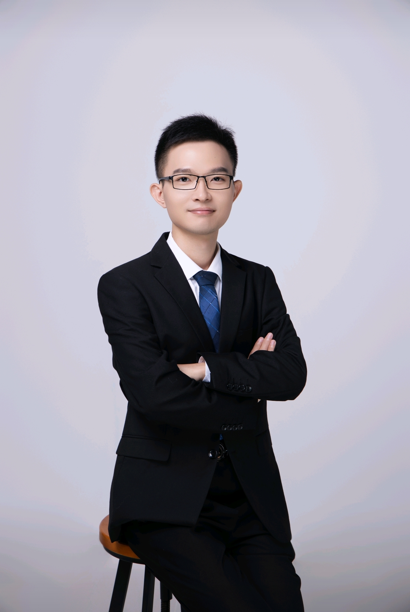
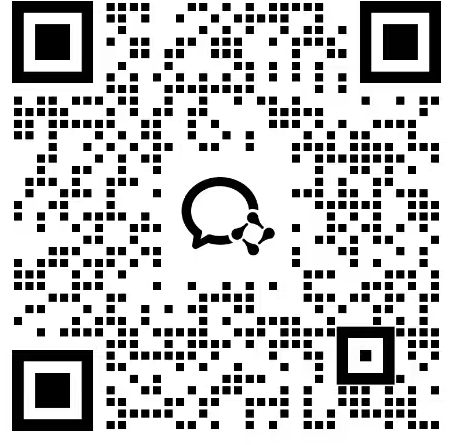

了解我们的专业心理咨询师
您好，这里是松境心理。我们是一群志同道合的伙伴，希望以专业、真诚的心理咨询支持每一位正在经历困扰的人。我们相信，许多痛苦都值得被认真理解和看见。
我们的咨询师团队中有许多人曾经历心理困扰，并在持续的咨询支持与个人成长中收获新的理解。因为亲身经历过，我们更愿意以尊重、接纳与耐心陪伴每一位访客。
咨询理论创始人 · Founder of the Counseling Theory · Dr.Bian
边志瑜老师长期关注心理困扰、情绪状态与个人成长，并在多年的个案咨询与研究中探索早期经历、内在感受与现实生活之间的联系。
其咨询理念重视对受伤经历与潜意识模式的理解，支持访客逐步增强自我觉察，认识情绪和行为背后的需要，并以更贴近真实感受的方式面对生活。涉及精神疾病诊断与医疗处理时，建议同时寻求正规医疗机构的专业帮助。
咨询本身是一种艺术，是接纳和理解，每个咨询师都有一颗爱人助人的心。
我们的故事始于自救，成于共愈。
我们团队是由一群受惠于边老师咨询体系而成长起来的咨询师组成，曾经也都是边老师的访客，都是在边志瑜老师的爱和智慧下从痛苦和绝望的困境中走出来的，并且坚定不移地走在心灵成长的道路上。
我们从最初的访客，一步步寻求理解与成长，最终成为能够支持他人的心理咨询师。从曾经接受帮助，到如今陪伴他人并继续成长，这段亲身经历构成了团队理解访客的重要基础。

擅长方向：青少年成长、亲子咨询、家庭咨询、个人探索与成长、情感咨询
用温暖、真诚与理解陪伴访客面对受伤经历，看到自身的力量，逐步找回对生活的选择感。
擅长方向：青少年心理、留学生心理、进食障碍、两性情感、原生家庭、个人成长
帮助访客看见自己，理解自己，化解内心的冲突和消耗，将创伤和痛苦转化为让自己幸福的经验和资粮。
擅长方向：青少年成长、亲子咨询、家庭咨询、个人探索与成长、情感咨询
内心的成长始于看见深处的受伤经历。愿以理解和支持陪伴你面对它，并发现新的生活可能。
擅长方向：个人探索成长、原生家庭伤害、两性情感关系、学业工作压力
用心看到每一位来访者的美好，认真理解和支持每一位来访者。我曾从爱与支持中受益，也愿意把这份理解传递下去。
擅长方向：青少年成长、个人探索与成长
走进一个人的内心，是很美好的过程。恢复每位访客最初的感受，让每位访客感受到最好的爱，是我的目标。
擅长方向：青少年问题、个人成长、关系议题、焦虑抑郁、强迫症
咨询是一段不断看到创伤下的真实内在自我的旅程。因为走过，得到过帮助，所以能够看到伤害下你的内在的样子。
擅长方向：两性情感关系、青少年心理、亲子关系、职场困境
每一个生病的人都是善良的天使。我愿意用一颗善良真诚的心去帮助访客一起成长，做真正的自己，自由而幸福。

擅长方向：原生家庭问题、抑郁焦虑、个人探索与成长
希望耐心倾听并接纳你内心的痛苦，陪伴你梳理方向、获得温暖与支持。愿给你一方舒适的空间。
擅长方向：强迫/抑郁/焦虑、个人探索与成长、青少年成长、人际关系
以爱为本，以人为本。帮助来访者看到自身的力量与可能性，重拾信心，迎接更光明的未来。
擅长方向：亲密关系、个人成长、职场心理健康、人际关系、情绪困扰
我们始终相信每一个人都有自己的美好与力量。爱、理解和支持可以陪伴我们在探索中逐步成长。
擅长方向：少儿成长、青少年成长、家庭咨询、两性情感、个人探索与成长
用纯粹的心、敏锐的察觉力、稳定的能量帮助访客恢复真实自我感受，完成精神意识成长。
擅长方向：个人成长、青少年咨询、情感咨询、亲子关系
还原访客的真实感受与所经历的真相事实，帮助访客找到自己的心，这是我们唯一想做的事情。
擅长方向：深度自我探索及各类心理问题
对访客了解的过程是看到一个人，是心与心交流的过程，人与人交流的过程，是心与心互相看见的过程。
擅长方向：焦虑抑郁、强迫症、原生家庭、职场问题
生命最初的渴望就是能够做自己。愿我们在探索中逐步看见爱与希望。
擅长方向：抑郁焦虑及躯体化症状、职场、两性情感、青少年亲子关系
用心觉醒，以爱成长。用真实的看见与理解陪伴每个访客踏上生命回归之旅。
擅长方向：青少年成长、亲子咨询、家庭咨询、个人探索与成长、情感咨询
选择成为咨询师是内心的选择。感受到接纳与理解所带来的力量后，我愿意在咨询中实践爱与支持。
擅长方向：青少年成长、亲子咨询、家庭咨询、个人探索与成长、情感咨询
关注个体受伤经历与当下困扰之间的联系，以真诚和理解陪伴每一位访客探索自己。

擅长方向：个人探索与成长、青少年成长、焦虑抑郁、强迫症、失眠
咨询不只是流派或话术，也需要咨询师真诚地理解和关心访客。希望这份陪伴能给你力量。
擅长方向：两性情感咨询、亲子关系咨询、职场压力、人际关系
接纳已经发生的经历，看到内心的伤害，理解自己的感受，逐步找回对生活的感知与力量。
擅长方向：青少年成长、亲子咨询、家庭咨询、个人探索与成长、情感咨询
曾经的我也在黑暗中走过，跟你一样渴望光亮照进生命。我愿跟你一起走上一段成长之旅，发现爱，拥抱爱。
